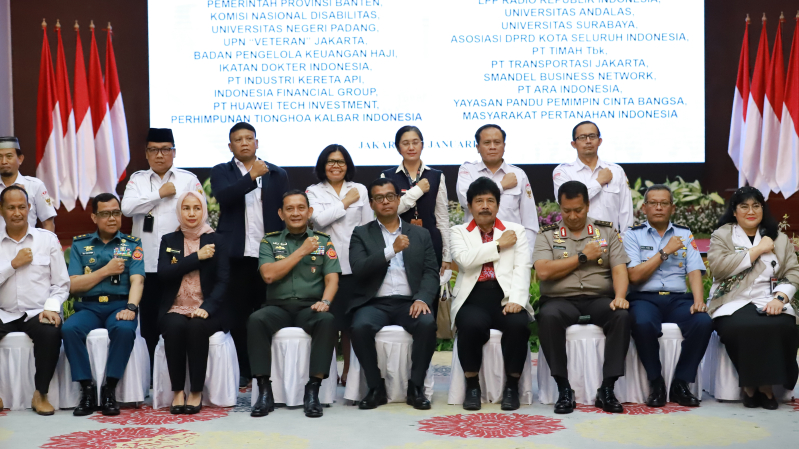

Bukankah Pancasila sangat penting?
Pancasila merupakan rangkaian kesatuan dan kebulatan yang tidak terpisahkan karena setiap sila dalam Pancasila mengandung empat sila lainnya dan kedudukan dari masing-masing sila tersebut tidak dapat ditukar tempatnya atau dipindah-pindahkan.

Anda mungkin ingin mengetahui lebih banyak tentang BPIP
Badan Pembinaan Ideologi Pancasila (disingkat BPIP) adalah lembaga yang berada di bawah dan bertanggung jawab kepada Presiden yang memiliki tugas membantu Presiden dalam merumuskan arah kebijakan pembinaan ideologi Pancasila, melaksanakan koordinasi, sinkronisasi, dan pengendalian pembinaan ideologi Pancasila secara menyeluruh dan berkelanjutan, dan melaksanakan penyusunan standardisasi pendidikan dan pelatihan, menyelenggarakan pendidikan dan pelatihan, serta memberikan rekomendasi berdasarkan hasil kajian terhadap kebijakan atau regulasi yang bertentangan dengan Pancasila kepada lembaga tinggi negara, kementerian/lembaga, pemerintahan daerah, organisasi sosial politik, dan komponen masyarakat lainnya. BPIP merupakan revitalisasi dari Unit Kerja Presiden Pembinaan Ideologi Pancasila (UKP-PIP).